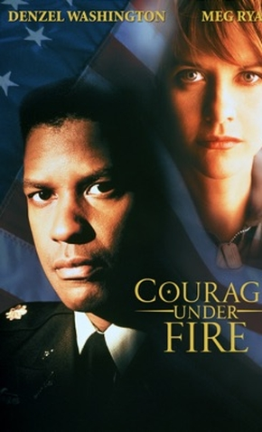
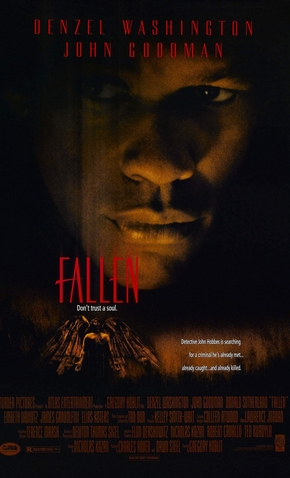
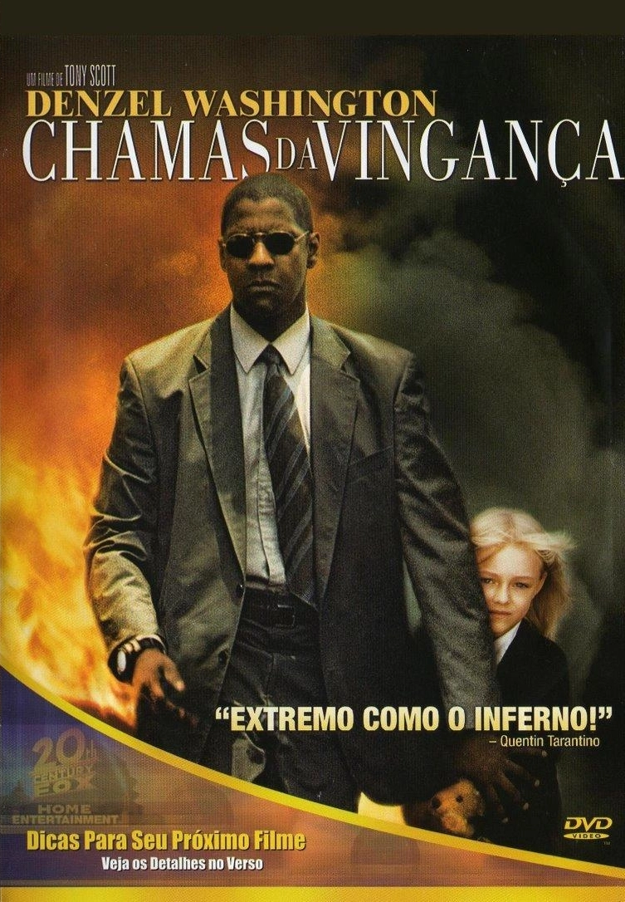
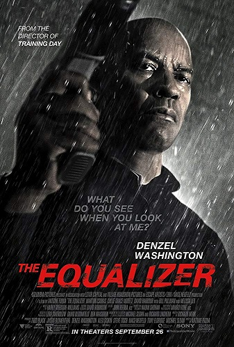
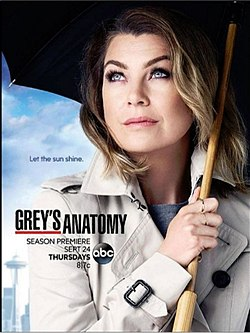

FILMES
Wilma - 1977
O filme conta a história da recordista mundial de corrida Wilma Rudolph, que superou as deficiências físicas, o racismo e a misoginia para conquistar diversas medalhas de ouro nos Jogos Olímpicos de 1960.
A Cara do Pai - 1981
Walter Whitney (George Sagal) é um homem de negócios branco que tem tudo o que pode desejar. Certo dia, ele descobre que Roger Porter (Denzel Washington), um adolescente negro, é seu filho e que não pode esperar a hora de ser adotado na comunidade quase que exclusivamente de brancos. de San Marino, na Califórnia.
St. Elsewhere - 1982, 1983, 1984, 1986, 1987
O drama acompanha a rotina do Hospital St. Eligius. chefiado pelo Doutor Donald Westphall e por Daniel Auschlander. Todo ano, novos residentes chegam para aprender novos desafios, e lidar com o perfeccionista Cirurgião Cardiovascular Mark Craig é apenas um dos desafios.
Licença pra Matar - 1984
Uma família em luto pela filha que morreu em um acidente de carro contra um motorista bêbado fica indignada com as burocracias que dificultam levar o caso a julgamento. No julgamento, o jovem promotor público, pressionado, parece ser incapaz de superar as manobras que o advogado do motorista usa. O juíz as vezes se vê forçado a se pronunciar a favor da defesa, mas parece que o motorista pode escapar por completo da punição.
A História de um Soldado - 1985
Década de 40. Em meio a uma sociedade dominada pelo racismo, o soldado negro Waters (Adolph Caesar) é assassinado enquanto voltava a uma base militar em Louisiana. O promotor do exercito Davenport (Howard E. Rollins Jr.), um dos únicos advogados negros da época, vai investigar o caso. Apesar das primeiras suspeitas caírem sobre os homens brancos da região, ele descobre que o soldado renegava as próprias raízes, o que irritava também os negros. Para descobrir o verdadeiro assassino, Davenport terá que enfrentar,além do preconceito racial, uma cadeia de comando que não está disposta a facilitar seu trabalho.
Uma Lição de Coragem - 1986
George McKenna (Denzel Washington) é diretor de uma escola localizada no sul de Los Angeles, em que os alunos lidam diariamente com drogas e violência, mostrando-se mais preocupados em sobreviver do que em aprender. George vai tentar transformar a instituição em referência de ensino através da prática da não-violência e do trabalho comunitário.
Os Donos do Poder - 1986
Pete St. John (Richard Gere) é um poderoso e bem sucedido consultor de política, com clientes em todo o país. Quando seu amigo de longa data, o senador de Ohio Sam Hastings (E.G. Marshall), decide deixar a política, ele é rapidamente convocado a ajudar na campanha do homem que irá sucedê-lo - o desconhecido e misterioso executivo Jerome Cade (J.T. Walsh). Paralelamente, Pete investiga a saída de Hastings com o assessor de sua ex-esposa, um jornalista proeminente de Washington. Mas diversos interesses estão em jogo e as coisas começam a ir mal.
Um Grito de Liberdade - 1987
Donald Woods (Kevin Kline) é editor chefe no jornal liberal Daily Dispatch na África do Sul. Ele tem escrito diversas críticas sobre a visão de Steve Biko (Denzel Washington) - militante negro que lutou contra o apartheid. Mas depois de conhecer Biko pessoalmente, ele muda de opinião. Eles passam a se encontram diversas vezes e isso significa que Woods e sua família começam a receber uma atenção especial da polícia. Quando Biko morre na prisão, Woods escreve uma biografia do militante. Porém, a única forma de ter seu livro publicado é saindo do país.
Herói sem Pátria - 1988
Reuben James (Denzel Washington), um soldado de elite da Tropa Britânica de Paraquedistas deixa o exército após ter servido na Irlanda do Norte e mais tarde na Guerra das Malvinas em 1982 - onde foi condecorado Herói de Guerra. Uma vez que retorna à vida civil, ele se encontra no mesmo ponto onde começou tudo e enfrenta dificuldades para arranjar emprego. Apesar de ter tomado a iniciativa com boas intenções, ele percebe que seu mérito no exército não tem nenhuma influência na vida cotidiana.
Tempo de Glória - 1989
Durante a Guerra Civil americana, Robert Gould Shaw (Matthew Broderick), um jovem sem experiência, mas de uma influente família, recebe o comando do primeiro batalhão composto exclusivamente por soldados negros.
O Poderoso Quinn - 1989
Xavier Quinn (Denzel Washington) é o chefe de polícia em uma ilha paradisíaca. Na tentativa de aproximar brancos e negros, acaba ganhando inimigos nos dois lados. A situação piora quando Maubee (Robert Townsend), seu amigo de infância, é envolvido num assassinato e num mistério que envolve uma mala repleta de dólares.
Um Espírito Grudou em Mim - 1990
Moony (Bob Hoskins) é um policial mal humorado, apaixonado por Crystal (Chloe Webb). Stone (Denzel Washington) é um advogado bem esperto e que está tendo um caso com a mesma moça. Moony odeia Stone com todas as suas forças. Até que o advogado morre em um acidente e o policial sofre um ataque cardíaco. O coração de Stone será transplantado para o corpo de Moony e o espírito de Stone voltará para perturbar a vida dele. Mas ao perceberem que Crystal corre perigo, os dois terão que se unir para protegê-la.
Mais e Melhores Blues - 1990
Bleek Gilliam (Denzel Washington) sonhava desde criança em ser músico, mas sua mãe insistia para que ele não largasse os estudos. Já adulto, ele torna-se um trompetista de sucesso e forma a sua própria banda de jazz. No entanto, sua rivalidade no palco com Shadow Henderson (Wesley Snipes) e seus problemas com mulheres levam Bleek a conhecer o fracasso.
Sem Limite para Vingar - 1991
O policial Nick Styles (Denzel Washington) é visto como um herói após ter prendido o perigoso psicopata Earl T. Blake (John Lithgow). O bandido nutre, desde então, uma profunda raiva contra Nick. Sete anos depois, quando escapa da prisão, Blake começa a por em prática seu plano de vingança, onde destrói a carreira do policial junto a corporação, ao público e à sua família.
Mississippi Masala - 1991
Meena (Sarita Choudhury) e sua família mudaram-se para o estado de Mississippi, Estados Unidos, após todos os indianos terem sido obrigados pelo governo da Uganda a deixarem o país. Eles tentam se restabelecer no novo ambiente e se reencontram com parentes que moram lá. Os pais de Meena tem uma loja de bebidas, enquanto ela limpa quartos e banheiros de hotel. Seu pai quer muito casá-la, mas a menina tem dificuldades para encontrar alguém ideal no novo país. Quando Meena conhece Demetrius (Denzel Washington), um homem negro que trabalha com limpeza de carpetes, eles logo se apaixonam. Mas esse amor ainda vai sofrer com muito preconceito, ressentimento e intolerância das famílias do casal.
Malcolm X - 1992
Biografia do famoso líder afro-americano (Denzel Washington) que teve o pai, um pastor, assassinado pela Klu Klux Klan e sua mãe internada por insanidade. Ele foi um malandro de rua e enquanto esteve preso descobriu o islamismo. Malcolm faz sua conversão religiosa como um discípulo messiânico de Elijah Mohammed (Al Freeman Jr.). Ele se torna um fervoroso orador do movimento e se casa com Betty Shabazz (Angela Bassett). Malcolm X ora uma doutrina de ódio contra o homem branco até que, anos mais tarde, quando fez uma peregrinação à Meca abranda suas convicções. Foi nesta época que se converteu ao original islamismo e se tornou um "Sunni Muslim", mudando o nome para El-Hajj Malik Al-Shabazz, mas o esforço de quebrar o rígido dogma da Nação Islã teve trágicos resultados.

O Dossiê Pelicano - 1993
Darby Shaw (Julia Roberts), uma estudante de Direito de Nova Orleans, descobre uma trama que envolve o assassinato de dois membros da Suprema Corte na mesma noite e prepara um dossiê contendo suas opiniões e estudos sobre os crimes. Ela chega à uma surpreendente conclusão e, nas mãos erradas, as informações daquele documento significariam uma revolta na política do país. Assim, quando Darby vê que sua vida corre perigo e tem apenas ao seu lado Gray Grantham (Denzel Washington), um jornalista, ele passa a ajudá-la a tentar elucidar a trama por completo.
Muito Barulho Por Nada - 1993
Após uma batalha, um príncipe siciliano e sua comitiva chegam a uma vila italiana, onde são bem recebidos. O amor pode vir até a florescer no local, mas existem pessoas interessadas em semear a discórdia.
Filadélfia - 1993
Andrew Beckett (Tom Hanks) é um promissor advogado que trabalha para um tradicional escritório da Filadélfia. Após descobrirem que ele é portador do vírus da AIDS, Andrew é demitido da empresa. Ele contrata os serviços de Joe Miller (Denzel Washington), um advogado negro que é homofóbico. Durante o julgamento, este homem é forçado a encarar seus próprios medos e preconceitos.
O Diabo Veste Azul - 1994
Em 1948, Ezekiel "Easy" Rawlins (Denzel Washington) é um veterano afro-americano da Segunda Guerra Mundial, e esta a procura de um emprego. No bar do seu amigo, ele conhece DeWitt Albright (Tom Sizemore), que esta em busca de uma mulher desaparecida, vista pela última vez num bairro da comunidade negra de Los Angeles. Easy, inocentemente, aceita o trabalho, mas logo se vê envolvido num assassinato com policiais corruptos, políticos cruéis e criminosos brutais.
Maré Vermelha - 1995
Em um submarino nuclear americano acontece um choque entre o primeiro oficial Ron Hunter (Denzel Washington), um militar flexível, e outro tradicional, Frank Ramsey (Gene Hackman), o capitão, quando paira a dúvida se devem ou não bombardear russos rebeldes, que se apoderaram de um míssil nuclear que pode ser usado contra os Estados Unidos. A tensão aumenta quando a ordem de disparo contra os rebeldesé seguida de uma mensagem incompreensível, que poderia ser um cancelamento da ordem anterior. Enquanto um deseja disparar, o outro acha prudente esperar a confirmação e um conflito interno se estabelece pelo controle do submarino.
Assassino Virtual - 1995
No futuro, um centro de tecnologia avançado desenvolve SID 6.7 (Russell Crowe), uma entidade de realidade virtual sádica, perigosa e inteligente construída a partir da personalidade de mais de 150 assassinos em série. Para treinar sua eficácia antes de usá-lo no treinamento com policiais, SID 6.7 é testado com prisioneiros. Mas quando SID 6.7 consegue injetar sua personalidade em um android, o único capaz de detê-lo é o ex-policial Parker Barnes (Denzel Washington).
Um Anjo em Minha Vida - 1996
O dedicado reverendo Henry Biggs (Courtney B. Vance) sente que seu casamento com Julia (Whitney Houston) atravessa uma crise, em virtude dele não ter muito tempo para a família, pois os problemas dos membros da sua igreja o deixam muito ocupado. Assim ele pede ajuda para Deus, que lhe manda Dudley (Denzel Washington), um anjo que acaba atraindo a atenção de Julia e criando novos problemas entre o casal. Além disto, um especulador imobiliário pretende demolir a igreja para construir um shopping center e uma área de lazer, trazendo ainda mais problemas para o Reverendo Biggs.
Coragem Sob Fogo - 1996
Em 1991, após a Guerra do Golfo, Nathaniel Serling (Denzel Washington), um tenente-coronel, tenta obter indícios de que uma oficial médica, Karen Emma Walden (Meg Ryan), que morreu na guerra merece ser a primeira mulher a ganhar a Medalha de Honra. Entretando, na verdade o Departamento de Relações Públicas da Casa Branca está procurando um herói e acaba encontrando um escândalo, sendo que esta verdade precisa ser encoberta por um atormentado oficial.

Possuídos - 1998
Após a execução de um serial killer, John Hobbes (Denzel Washington), um detetive, acredita que parte dos seus problemas terminaram, mas logo repara que pessoas na rua cantam a mesma melodia que o criminoso cantou na câmara de gás. Gradativamente o policial conclui que todos estavam possuídos por Azazel, um anjo amaldiçoado que não tem forma mas que com um simples toque consegue penetrar em quase todas as pessoas. Quando Hobbes é forçado a matar um professor, que estava possuído por Azazel, fica claro que ele precisa proteger as pessoas desta entidade demoníaca.

Nova York Sitiada - 1998
Após o sequestro de um líder religioso islâmico, a cidade Nova York vira o lavo de ataques terroristas. O agente do FBI Anthony Hubbard (Denzel Washington), a oficial da CIA Elise Kraft (Annette Bening) e o general William Devereaux (Bruce Willis) unem forças para capturar um perigoso grupo de terroristas que plantam bombas em diversos lugares de Nova York, levando a cidade ao caos.
Jogada Decisiva - 1998
Jake Shuttlesworth (Denzel Washington) esta na prisão cumprindo pena por ter assassinado sua esposa, mãe de seu filho Jesus (Ray Allen), após uma violenta briga doméstica. Jesus, ao longo dos anos, tornou-se um excelente jogador de basquete, procurado por vários times profissionais para seguir a carreira. Mas ele sente-se ofuscado por seu pai, que acaba recebendo liberdade condicional com uma condição: convencer o filho a assinar um contrato para jogar basquete pela universidade Big State.
O Colecionador de Ossos - 1999
Em Nova York, Lincoln Rhyme (Denzel Washington), um conceituado policial, sofre um acidente e fica tetraplégico. Após quatro anos em uma cama, Rhyme se concentra na idéia de suicídio e tenta convencer os que estão ao seu redor em ajudá-lo na eutanásia. Tudo muda quando um serial killer começa a agir na cidade. Rhyme começa a ajudar no caso e os meios modernos de investigação são levados para sua casa. Amelia Donaghy (Angelina Jolie), uma policial de rua, é orientada por ele na investigação, mas Howard Cheney (Michael Rooker), o chefe de polícia, é um monumento à incompetência que só sabe criar entraves.
Hurricane - O furacão - 1999
Em junho de 1966, Rubin "Hurricane" Carter (Denzel Washington) era um forte candidato ao título mundial de boxe. Entretanto, os sonhos de Carter vão por água abaixo quando três pessoas são assassinadas num bar em Nova Jersey. Indo para casa em seu carro e passando perto do local do crime, Carter é erroneamente preso como um dos assassinos e condenado à prisão perpétua. Anos mais tarde, Carter publica um memorial, chamado "The 16th round", em que conta todo o caso. O livro inspira um adolescente do Brooklyn e três ativistas canadenses a juntarem forças com Carter para lutar por sua inocência.
Duelo de Titãs - 2000
Herman Boone (Denzel Washington) um técnico de futebol americano contratado para trabalhar no comando de um time universitário dividido pelo racismo, os Titans. Inicialmente, Boone sofre preconceitos raciais por parte dos demais técnicos e até mesmo de jogadores do seu time, mas aos poucos ele conquista o respeito de todos e torna-se um grande exemplo para o time e também para a pequena cidade em que vive.
Um Ato de Coragem - 2001
John Q. Archibald (Denzel Washington) é um homem comum, que trabalha em uma fábrica e vive feliz com sua esposa Denise (Kimberly Elise) e seu filho Michael (Daniel E. Smith). Até que Michael fica gravemente doente, necessitando com urgência de um transplante de coração para sobreviver. Sem ter condições de pagar pela operação e com o plano de saúde de sua família não cobrindo tais gastos, John Q. se vê então numa luta contra o tempo pela sobrevivência de seu filho. Em uma atitude desesperada, ele então decide tomar como refém todo o setor de emergência de um hospital, passando a discutir uma solução para o caso com um negociador da polícia (Robert Duvall) e com um impaciente chefe de polícia (Ray Liotta), que deseja encerrar o caso o mais rapidamente possível.
Voltando a Viver - 2002
Antwone Fisher (Derek Luke) é um jovem marinheiro de temperamento explosivo, que constantemente arruma confusão na Marinha. Enviado ao psiquiatra Jerome Davenport (Denzel Washington), Antwone inicialmente se mostra relutante mas aos poucos revela ao médico seu passado problemático. Com o tempo Antwone e o dr. Davenport iniciam uma relação de amizade, ao mesmo tempo em que o marinheiro se apaixona pela jovem Cheryl (Joy Bryant).
Por um Triz - 2003
Matt Whitlock (Denzel Washington) é o honesto delegado de uma pequena cidade da Flórida, que se vê em apuros após usar dinheiro do tráfico de drogas para pagar o caro tratamento médico de sua amante, Ann Marai (Sanaa Lathan), que está doente. Porém um incêndio criminoso mata Ann e seu marido, colocando Matt como principal suspeito do crime. A responsável pela investigação do caso é Alex Diaz (Eva Mendes), ex-esposa de Matt, que passa a desconfiar cada vez mais dele a cada nova pista descoberta. Com a investigação em andamento, Matt precisa correr contra o tempo para descobrir o autor dos assassinatos, antes que ele próprio vá parar na cadeia.
Sob o Domínio do Mal - 2004
Ben Marco (Denzel Washington) é um soldado que, em meio a Guerra do Golfo, é sequestrado pelo inimigo, juntamente com sua tropa. Alguns anos depois, já em sua casa, Ben começa a se lembrar do processo de lavagem cerebral pelo qual passou enquanto esteve preso, que fazia com que obedecesse ordens sem contestá-las. Com um de seus companheiros de tropa, Raymond Shaw (Liev Schreiber), agora concorrendo a um cargo na vida política do país, Ben tenta entrar em contato com ele, temendo que ele esteja sendo controlado neste exato momento.
Chamas da Vingança - 2004
Uma grande onda de sequestros varre o México, fazendo com que muitos de seus cidadãos mais ricos contratem guarda-costas para seus filhos. John Creasy (Denzel Washington) é um desmotivado ex-agente da CIA, que é levado à Cidade do México por seu amigo Rayburn (Christopher Walken). Sem emprego, ele aceita a proposta de ser guarda-costas da pequena Pita (Dakota Fanning), uma garota de 9 anos que é filha de um industrial (Marc Anthony). Incomodado com as perguntas constantes da garota, John inicialmente vê seu novo trabalho como um fardo mas, aos poucos, cria amizade com Pita e passa a ter um novo ânimo em sua vida. O sequestro de Pita desfaz esta situação, fazendo com que ele, mesmo ferido, parta para resgatá-la a qualquer custo.

O Plano Perfeito - 2006
Quatro pessoas vestidas com uniformes de pintor entram no movimentado banco Manhattan Trust. Em poucos minutos elas controlam o local, para a realização de um assalto planejado em detalhes. Após a notícia do assalto ser divulgada chegam ao local os detetives Keith Frazier (Denzel Washington) e Bill Mitchell (Chiwetel Ejiofor), que têm a missão de fazer contato com o líder dos bandidos, Dalton Russell (Clive Owen). Os detetives trabalham com o auxílio do capitão John Darius (Willem Dafoe) e esperam que a situação seja resolvida rapidamente. Porém eles não contavam com a frieza e inteligência de Russell, que parece estar sempre um passo à frente das ações da polícia. Quando a capacidade de Frazier começa a ser posta em dúvida surge Madeline White (Jodie Foster), uma poderosa jogadora que solicita um encontro particular com Russell.
Déjà vu - 2006
Doug Carlin (Denzel Washington) trabalha para a Agência do Tabaco, Álcool e Armas de Fogo. Chamado para recuperar provas após a explosão de uma bomba em uma balsa localizada em Nova Orleans, Carlin descobre que aquilo que a maioria das pessoas acredita estar apenas em sua mente é bem mais poderoso do que se imagina. Ele descobre então um meio de viajar no tempo, o que possibilita que evite que a explosão ocorra.
O Gângster - 2007
Início dos anos 70. O impacto da Guerra do Vietnã nos Estados Unidos é avassalador e a corrupção policial em Nova York é gigantesca. Com o aval de autoridades policiais a máfia trafica entorpecentes, sem ser ameaçada de verdade. Neste contexto ascende Frank Lucas (Denzel Washington), aprendiz de um dos maiores líderes negros do pós-guerra, que aproveita a morte de seu mentor para assumir a liderança do tráfico em Nova York, já que vende um produto mais puro e mais barato. Lucas logo torna-se uma celebridade na cidade, superando seus concorrentes no mercado em que atua. Mas Richie Roberts (Russell Crowe), um implacável detetive, resolve agir para desbaratar o negócio de Lucas.
O Grande Desafio - 2007
Melvin Thompson (Denzel Washington) é um brilhante professor e amante das palavras. Embora tenha convicções políticas que possam atrapalhar sua carreira, ele decide apostar nos seus alunos para formar um grupo de debatedores e colocar a pequena Wiley College, do Texas, no circuito dos campeonatos entre as universidades. Mas o seu maior objetivo é enfrentar a tradição de Harvard diante de uma enorme platéia. Inspirado em fatos reais. (RC).
O Sequestro do Metrô 123 - 2009
Em O Sequestro do Metrô 1 2 3, Walter Garber (Denzel Washington) é um executivo da companhia de metrô da cidade de Nova York que, devido a uma suspeita de suborno, foi rebaixado para a função de coordenador de tráfego. Quando um dos trens do metrô, o Pelham 1 2 3, é sequestrado por um misterioso grupo, é ele quem mantém contato com Ryder (John Travolta), líder dos sequestradores. Ryder exige que a prefeitura lhe pague US$ 10 milhões em uma hora, caso contrário matará um refém a cada minuto extra. A polícia envia à sede do metrô o negociador Camonetti (John Turturro), mas Ryder exige que Garber continue na função.
O Livro de Eli - 2010
Em um futuro não muito distante, 30 anos após o término da última guerra. Eli (Denzel Washington) é um homem solitário, que percorre a América do Norte devastada. Ele apenas deseja paz, mas ao ser desafiado não foge à luta. Seu principal objetivo é proteger a esperança da humanidade, a qual guarda consigo há 30 anos, sendo que para tanto faz o que for preciso para sobreviver. O único que compreende seu intento é Carnegie (Gary Oldman), o autoproclamado déspota de uma cidade repleta de ladrões. Ao mesmo tempo Solara (Mila Kunis), a filha da companheira de Carnegie (Jennifer Beals), fica fascinada com Eli pela possibilidade de que ele lhe mostre o que há além dos domínios que conhece. Só que Carnegie está disposto a impedir sua cruzada, para recuperar Solara e também conseguir o valioso objeto que Eli protege.

Incontrolável - 2010
Em Incontrolável, uma composição carregada de produtos altamente tóxicos está desgovernada e o perigo é iminente. Um condutor (Chris Pine) e um maquinista experiente (Denzel Washington) precisam evitar que uma pequena cidade em seu caminho seja destruída. A única saída é botar em prática uma operação muito arriscada, mas o tempo corre contra eles.
Protegendo o Inimigo - 2012
Tobin Frost (Denzel Washington) é um ex-agente da CIA procurado pela agência como traidor da pátria. Ele está na Cidade do Cabo, na África do Sul, onde tenta negociar um importante dispositivo eletrônico. Caçado pelas ruas da cidade, ele decide se entregar no consulado americano para escapar da perseguição. Os agentes o levam para um abrigo da CIA, onde Frost é torturado para revelar o que sabe. Entretanto, logo o local é invadido pelo grupo que deseja matar Frost. Sua única chance é Matt Weston (Ryan Reynolds), o oficial responsável pelo abrigo, que precisa proteger seu hóspede a todo custo.
O Voo - 2012
Whip (Denzel Washington) está separado de sua esposa e filho, é um experiente piloto da aviação comercial, mas tem sérios problemas com bebidas e drogas. Certo dia, ele acabou salvando a vida de diversas pessoas quando a aeronave que pilotava apresentou uma pane, mas sua frieza e conhecimento permitiu que uma aterrisagem, praticamente, impossível acontecesse. Agora, apesar de ser considerado um herói por muitos e contar com o apoio de amigos, ele se vê diante do jogo de empurra na busca pelos culpados da queda e das mortes ocorridas. É quando seus erros e escolhas do passado passam a ser decisivos para definir o que ele irá fazer de seu futuro.

Dose Dupla - 2013
Robert "Bobby" Trench (Denzel Washington) e Michael "Stig" Stigman (Mark Wahlberg) trabalham juntos há dez meses e tentam fazer negócios com Papi Greco (Edward James Olmos), um poderoso traficante mexicano que atua nos Estados Unidos. Como Papi está desconfiado da dupla, se recusa a negociar com eles. A saída então é roubar um banco que, supostamente, receberia o faturamento deixado toda semana por capangas do traficante. Entretanto, a quantia disponível no cofre é muito maior do que Bobby e Stig imaginavam, o que deixa claro que há mais gente envolvida na situação. O que nenhum dos dois imaginava era que o parceiro fosse um agente infiltrado, com o objetivo de desbaratar Papi Greco: enquanto Bobby era da Narcóticos, Stig integrava o setor de inteligência da marinha.
O Protetor - 2014
O Protetor é baseado na série de televisão "The Equalizer" dos anos 1980. O filme apresenta Robert McCall (Denzel Washington), um homem misterioso que costumava trabalhar como oficial da polícia. Motivado pelas injustiças sociais, ele ajuda vítimas e qualquer pessoa em perigo. A protegida da vez é Teri (Chloë Grace Moretz), jovem explorada sexualmente por mafiosos russos.

Champs - 2014
Alguns dos maiores nomes da história do boxe, Mike Tyson, Evander Holyfield e Bernard Hopkins tem suas vidas examinadas e suas histórias - dentro e fora do ringue.
Grey's Anatomy Temporada 12 - 2015
Enquanto Meredith (Ellen Pompeo) e seus três filhos se mudam com Maggie (Kelly McCreary) e Amelia (Emilee Wallace), Bailey (Chandra Wilson) é nomeada a nova Chefe Cirurgiã, o que a deixa em más lençóis com seu próprio marido (Bashir Salahuddin). Além disso, Callie (Sara Ramirez) começa a sair com a nova residente do hospital, Penny.

Um Limite Entre Nós - 2016
Anos 1950. Troy Maxson (Denzel Washington) tem 53 anos e mora com a esposa, Rose (Viola Davis), e o filho mais novo, Cory (Jovan Adepo). Ele trabalha recolhendo lixo das ruas e batalha na empresa para que consiga migrar para o posto de motorista do caminhão de lixo. Troy sente um profundo rancor por não ter conseguido se tornar jogador profissional de baseball, devido à cor de sua pele, e por causa disto não quer que o filho siga como esportista. Isto faz com que o jovem bata de frente com o pai, já que um recrutador está prestes a ser enviado para observá-lo em jogos de futebol americano.
Sete Homens e um Destino - 2016
Os habitantes de um pequeno vilarejo sofrem com os constantes ataques de um bando de pistoleiros. Revoltada com os saques, Emma Cullen (Haley Bennett) deseja justiça e pede auxílio ao pistoleiro Sam Chisolm (Denzel Washington), que reúne um grupo especialistas para contra-atacar os bandidos.
Chasing Trane - 2016
A vida e a carreira de um dos nomes mais importantes da música. O saxofonista, compositor e inovador John Coltrane expandiu as fronteiras do jazz ao incorporar a este estilo musical elementos tradicionais de outros estilos. Trata-se de uma lenda do jazz.
Roman J Israel - 2017
Roman J. Israel (Denzel Washington) é um advogado determinado e honesto, acostumado a ver os outros ganharem crédito por seu bom trabalho. Ele defende que os criminosos sejam julgados de forma justa e não teme ir contra o sistema. Porém, quando seu sócio sofre um ataque cardíaco, a firma é fechada e Roman é convidado a assumir um cargo na companhia do ambicioso George Pierce (Colin Farrell), que se importa mais com o dinheiro do que com a justiça. O que ele não imaginava é que passaria a questionar seus próprios valores em meio aos perigosos bastidores do poder.
O Protetor 2 - 2018
O Protetor 2 conta a história de Robert McCall (Denzel Washington), um homem que agora trabalha como motorista e ajuda as pessoas que enfrentam dificuldades decorrentes de injustiças, em Massachusetts, Estados Unidos. Quando sua amiga Susan Plummer (Melissa Leo) é morta durante a investigação de um assassinato na Bélgica, ele decide sair do anonimato e encontrar seu antigo parceiro, Dave (Pedro Pascal), no intuito de encontrar pistas sobre o autor do crime.
Vozes que Inspiram - 2020
O documentário Vozes que Inspiram segue a vida de seis estudantes em busca do desenvolvimento de suas performances individuais, visando a anual August Wilson Monologue Competition, onde milhares de estudantes competem visando uma oportunidade de atuar na Broadway.
Os Pequenos Vestígios - 2021
Em Pequenos Vestígios, Deke (Denzel Washington) é um policial cansado, com um talento para enxergar os pequenos detalhes que podem solucionar casos e com uma tendência por quebrar regras. Quando ele se une ao esperto detetive Baxter (Rami Malek) para encontrar um serial killer (Jared Leto), seu passado obscuro e mau comportamento começam a se tornar um problema.
A Tragédia de Macbeth - 2021
Baseado na peça trágica de William Shakespeare, a nova adaptação de A Tragédia de Macbeth segue a história do lorde Macbeth ao voltar de uma guerra. No meio do caminho, três bruxas o abordam e falam sobre sua visão de que ele será o próximo rei da Escócia. Ao contar a notícia para sua esposa, eles planejam o assassinato do rei atual do país e assim garantir o reinado de Macbeth. Porém, como o prórpio nome diz, Macbeth é uma tragédia, em uma adaptação feroz e que, além de ser uma história de assassinato, envolve loucura, ambição e astúcia furiosa.
A Journal for Jordan - 2021
A Journal for Jordan conta a história de Charles Monroe King (Michael B. Jordan), um militar que antes de ser morto em ação em Bagdá, escreve um diário para seu filho com a intenção de dizer a ele como viver uma vida decente, apesar de crescer sem pai.